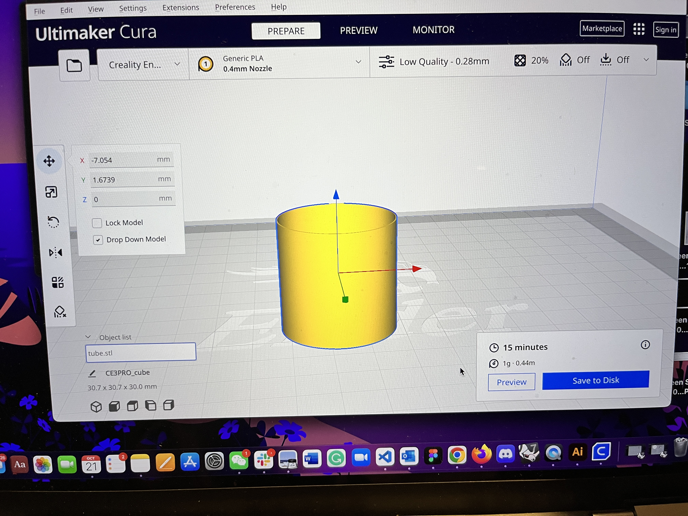
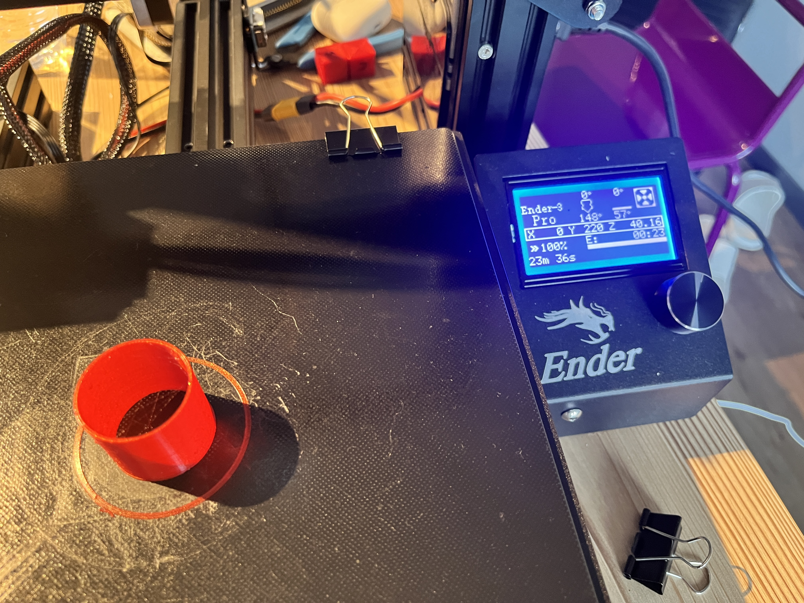

Assignment 3: Getting started with 3D printing
By Sherry Wang
This assignment marks the start of 3D printing in this course. The first step was assembling the printer, which took about 2 hours and 3 people in total. For transparency, three students including me have been and will be using the same printer and filaments. I took pictures of the other two students assembling and the final outcome:
I have to agree with several chats in Discord - the instruction guide was not as clear as one would hope, even for someone from an engineering background like me. We had to undo a couple of steps, but finally succeeded.
Once the assembly and bed leveling steps were done, I started printing cubes.
1. A 2cm cube with the standard "low quality" settings:
On Cura, the estimated time was 20 minutes and the printer ended up using 22 minutes. Here's the pictures of the output:
Using a caliper, I measured the size to be: 20.07mm, 19.71mm, 19.91mm. Here's all the pictures for documentation:

Luckily, the very first time I printed it was within 1mm tolerance, so there's no need to calibrate the print settings, which saved both time and filaments.
2. A 2cm cube with the standard "standard quality" settings:
On Cura, the estimated time was 26 minutes and the printer ended up using 28 minutes. Here's the pictures of the output:

Using a caliper, I measured the size to be: 20.03mm, 20.10mm, 19.80mm. Here's all the pictures for documentation:

3. A 2cm cube with the standard "super quality" settings:
On Cura, the estimated time was 50 minutes and the printer ended up using exactly that time. Here's the pictures of the output:
Using a caliper, I measured the size to be: 19.98mm, 19.90mm, 19.78mm. Here's all the pictures for documentation:

4. A 2cm cube with a concentric top and bottom layer and in low quality (to save time):
On Cura, the estimated time was 21 minutes and the printer ended up using 24 minutes. Here's the pictures of the output:
Using a caliper, I measured the size to be: 20.15mm, 19.92mm, 20.34mm. Here's all the pictures for documentation:

Next was tube printing!
1. A tube 3cm in diameter and 3cm high with a single extrusion wall thickness:
For the wall thickness, I set it in Rhino while creating the tube using the "tube" command. I entered 0.4mm, as it was the diameter of the filament.
On Cura, the estimated time was 15 minutes and the printer ended up using 17 minutes. Here's the pictures of the output:

Using a caliper, I measured the diameter to be 30.14mm and height 29.66mm. Here's all the pictures for documentation:

2. A tube 3cm in diameter and 3cm high with a double extrusion wall thickness and random z-seam alignment:
Similar to the first tube, I changed the wall thickness in Rhino from 0.4mm to 0.8mm. I then changed the z-seam alignment on Cura.
On Cura, the estimated time was 21 minutes and the printer ended up using 23 minutes. Here's the pictures of the output:

Using a caliper, I measured the diameter to be 31.45mm and height 29.69mm. I'd say the diameter was still within 1mm tolerance, as the thickness of this became 0.8mm. Here's all the pictures for documentation:

Then came cylinder printing!
1. A cylinder 3cm in diameter exported with a 0.1mm tolerance:
There was no requirement on how high the cylinders should be, so I chose 2cm. When exporting the stl file in Rhino, there's a place to enter the tolerance, and so that's what I did. I also continued using "low quality", as it's time saving.
On Cura, the estimated time was 31 minutes and the printer ended up using 32 minutes. Here's the pictures of the output:
The 0.1mm tolerance left out edges arround the cylinder.
Using a caliper, I measured the diameter to be 29.86mm and height 19.57mm. Here's all the pictures for documentation:

2. A cylinder 3cm in diameter exported with a 0.001mm tolerance:
Similar to the first cylinder, I entered the tolerance while exporting the stl file.
On Cura, the estimated time was 31 minutes and the printer ended up using 32 minutes. It's seemed that the change of tolerance did not add more time. Here's the pictures of the output:

Using a caliper, I measured the diameter to be 30.00mm (exactly!) and height 19.51mm. Here's all the pictures for documentation:

3. A cylinder 3cm in diameter with special mode "spiralize outer contour":
This was an interesting one. I set the mode on Cura, which indicated that "this feature turns a solid model into a single walled print with a solid bottom". I guessed that the top cap would be missing and I was right.
On Cura, the estimated time was 16 minutes and the printer ended up using 19 minutes. Here's the pictures of the output:


It made sense that there's no cap, since there's no support underneath the cap and the printer could not print something in the middle of air.
Using a caliper, I measured the diameter to be 29.92mm and height 19.63mm. Here's all the pictures for documentation:

4. A cylinder 3cm in diameter printed on its side with supports on:
And finally, the lied down cylinder. I rotated the cylinder in Cura, and the software automatically recentered the object so that it's touching the bed which was convenient. I also added support, at places that were touching the bed.
On Cura, the estimated time was 39 minutes and the printer ended up using that time. Here's the pictures of the output:
I mananged to scrap away most of the support. Using a caliper, I measured the diameter to be 30.06mm and height 19.98mm. Here's all the pictures for documentation:

Last but not least, the nested object!
I went freely in Rhino, aiming for a flower at first and ended up with a random pattern.
When extruding the surface, I had difficulty capping the odd shape. I fixed the problem by extruding it in solid form.
When importing the one stl file into Cura, the software warned me about having duplicated or missing surfaces, so I went back to Rhino to solve that problem.
On Cura, the estimated time was 23 minutes, and here's a picture of what the pattern looks like:
The printer ended up using 25 minutes. Here's a picture of the output:

Source files:
cube stl file
low cube gcode file
standard cube gcode file
super cube gcode file
concentric cube gcode file
single thickness tube stl file
single thickness tube gcode file
double thickness and random z-seam tube stl file
double thickness and random z-seam tube gcode file
cylinder with 0.1 tolerance stl file
cylinder with 0.1 tolerance gcode file
cylinder with 0.001 tolerance stl file
cylinder with 0.001 tolerance gcode file
cylinder with spiralize outer contour gcode file
cylinder on the side gcode file
nested pattern stl file
nested pattern gcode file
Acknowledgements:
Kyle Wang and Kefeng Wang for helping set up the printer and providing help when printing!
Junchao, Nadya and others for support on Discord!